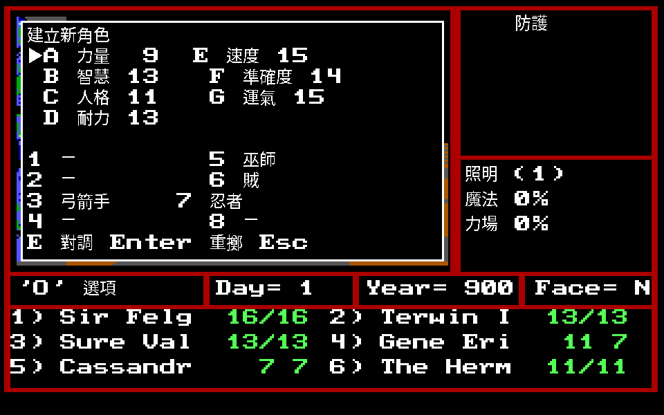
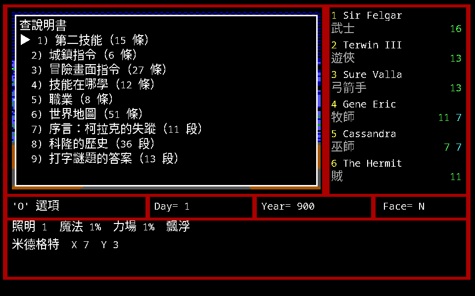

建立角色
角色由職業、種族、陣營、性別四項定義，其中職業最重要。 任何新造的角色一律 18 歲、經驗等級 1。

流程是：擲骰子 → 看右邊哪些職業前面有數字（那些才能選）→ 按 1–8 選職業 →
選種族 → 選陣營 → 選性別 → 命名。
- 屬性以亂數產生，每擲一次一組。按
A–G可以交換兩項的點數。 - 按空白鍵或 Enter 重擲（空白鍵有動畫）。
- 過程中隨時可按 Esc 從選職業重來。
七項基本屬性
每項 3～21。畫面上的順序就是下表順序，字母代號 A–G 依序對應。
| # | 中文 | 原文 | 影響 |
|---|---|---|---|
| 一 | 力量 | Might | 戰鬥中對敵人造成的傷害大小 |
| 二 | 智慧 | Intellect | 一般知識，影響巫師的法力點數 |
| 三 | 人格 | Personality | 一般愛心，影響牧師的法力點數 |
| 四 | 耐力 | Endurance | 戰鬥中的精力，影響生命點數 |
| 五 | 速度 | Speed | 增加防禦等級，並決定戰鬥中的攻擊順序 |
| 六 | 準確度 | Accuracy | 精確擊中敵人的程度 |
| 七 | 運氣 | Luck | 所有嘗試都失敗時能否成功，無法預估的隨機因素 |
「準確度」在手冊裡有三種寫法（p.17 準確度、p.22 精確度、p.24 準確性），是同一項。
八種職業
| # | 中文 | 原文 | 主要屬性 | 每級生命點數 | 施法 |
|---|---|---|---|---|---|
| 一 | 武士 | Knight | 力量 | 1–12 | 無 |
| 二 | 遊俠 | Paladin | 力量、人格、耐力 | 1–10 | 高等級時有牧師法力 |
| 三 | 弓箭手 | Archer | 智慧、準確度 | 1–10 | 高等級時有巫師法力 |
| 四 | 牧師 | Cleric | 人格 | 1–8 | 牧師法力（防禦、治療） |
| 五 | 巫師 | Sorcerer | 智慧 | 1–6 | 巫師法力（攻擊、戰鬥） |
| 六 | 賊 | Robber | 運氣 | 1–8 | 無（有特殊能力） |
| 七 | 忍者 | Ninja | 全部 | 1–8 | 無（有特殊能力） |
| 八 | 野蠻人 | Barbarian | 耐力 | 1–12 | 無 |
升級時能增加的生命點數會因耐力較高而增加；開始時的生命點數是上限加上耐力的補償修正。
裝備限制
這一段是實際組隊時最常翻的：
| 職業 | 盔甲 | 盾牌 | 武器 |
|---|---|---|---|
| 武士 | 全部 | 可 | 除陣營不符或他職專用外全部 |
| 遊俠 | 全部 | 可 | 同武士，但肉搏戰時不能用投射武器 |
| 弓箭手 | 鏈子甲或更輕 | 不可 | 同武士；肉搏戰時仍可用投射武器 |
| 牧師 | 軟甲或更輕 | 可 | 棍棒、槌子、短棍、鞭子、大槌、連枷、木棒、鐵槌；不能用投射武器 |
| 巫師 | 只有襯甲 | 不可 | 棍棒、鞭子、管子、木棒、刀子、匕首 |
| 賊 | 鏈子甲 | 可 | 投石索、十字弓、所有單手武器 |
| 忍者 | 環甲或更輕 | 不可 | 大部分單手武器、忍者刀；雙手只有木棒與長柄大刀；大部分投射武器 |
| 野蠻人 | 鎧甲或更輕 | 大部分可 | 除劍以外大部分武器；投射只有投石索與吹箭 |
賊與忍者的特殊能力：解鎖（Pick locks）、找出機關（Find traps）、突襲（Back stab）； 忍者另有行刺（assassinate）。兩者戰鬥時的第一次攻擊只要條件許可就自動設定為突襲／行刺， 成功會顯示在畫面上。忍者的能力與賊相同但較弱。
手冊的組隊建議：每一種職業各選一名。
職業屬性下限
× 表示沒有限制。
| 職業 | 力量 | 智慧 | 人格 | 耐力 | 速度 | 準確度 | 運氣 |
|---|---|---|---|---|---|---|---|
| 武士 | 15 | × | × | × | × | × | × |
| 遊俠 | 13 | × | 13 | × | × | × | × |
| 弓箭手 | 有下限 | 13 | × | × | × | 13 | × |
| 牧師 | 有下限 | × | 13 | × | × | × | × |
| 巫師 | 有下限 | 13 | × | × | × | × | × |
| 賊 | 有下限 | × | × | × | × | × | × |
| 忍者 | 13 | 13 | 13 | 13 | 13 | 13 | 13 |
| 野蠻人 | 有下限 | × | × | 15 | × | × | × |
寫「有下限」的那幾格，原書只印了一個向上箭頭，沒有印數字。這裡不補。
五個種族
| # | 中文 | 原文 | 抗性 | 屬性修正 |
|---|---|---|---|---|
| 一 | 人類 | Human | 睡眠法術與毒藥，很強 | 無修正 |
| 二 | 精靈 | Elf | 睡眠法術，少許 | ＋1 智慧、準確度；−1 力量、耐力 |
| 三 | 矮人 | Dwarf | 毒藥，很強 | ＋1 耐力、運氣；−1 智慧、速度 |
| 四 | 侏儒 | Gnome | 魔法，少許 | ＋2 運氣；−1 速度、準確度 |
| 五 | 半獸人 | Half-orc | 睡眠法術與毒藥，少許 | ＋1 力量、耐力；−1 智慧、人格、運氣 |
手冊特別提醒：抗力在遊戲畫面上看不出來，但面對不同的魔法攻擊時很重要， 所以最好組一支混合種族的隊伍。
陣營與性別
陣營三種：善良 GOOD、中立 NEUTRAL、邪惡 EVIL。不影響基本屬性，但對遊戲進行影響很大。
- 陣營不是絕對的。遊戲過程中對遭遇及戰鬥的反應會改變陣營，有些法術也會。
- 某些地點、物品及武器只能由善良或邪惡陣營的人進入及使用。
- 中立陣營能進入有指定陣營的地區，但不能使用指定陣營的物品。
性別兩種，同樣不影響屬性，但特定地點、物品或行動只有某一性別能用 —— 冰穴 (15,8) 那個「全隊都是男性可以增加 10 點人性」就是這一條的例子。
角色資料畫面

手冊 p.26 的畫面圖解把英文欄位逐項連到中文：
| 欄位 | 中文 | 說明 |
|---|---|---|
HP |
生命點數 | 0 時喪失意識，之後再受傷即死亡。顯示「目前／該等級最高」 |
SP |
法力點數 | 顯示「目前／可達到的最高」 |
AC |
防護等級 | 愈高愈不易受傷，通常 0–30 級，視盔甲、盾牌、速度、法術而定 |
SL |
法力等級 | 能施放的最高法術等級 |
Lvl |
經驗等級 | 初值 1 |
Exp |
經驗點數 | 1 到 2 級約需 2000 點，以後逐級加倍 |
Age |
年齡 | 從 18 歲開始。年老後屬性降低，80 歲以後可能在過夜時死亡 |
Thievery |
盜行 | 解鎖、破壞機關的能力 |
Gold Gems Food |
黃金、寶石、食物 | 食物一單位＝一天，開始 10 單位、最多 40 |
Cond |
狀況 | 中毒、麻痺、石化等 |
(Equipped) |
配備 | 最多六項，且受邏輯限制 |
(Backpack) |
背包 | 最多六項，不能直接使用 |
角色畫面上的三個指令：Ctrl+N 改名、Ctrl+D 刪除、 Esc 返回。
傭兵
傭兵不是造出來的，是在旅店僱的。行為與控制跟正常角色一樣，但有七條例外：
- 遊戲開始時沒有傭兵可選；完成某些使命後特定旅店才會出現。
- 每天結束時必須付工資，付不出來他們會離開，回到上次存檔的旅店。
- 可隨時 Dismiss，他們一樣回到上次存檔的旅店。
- 檢視傭兵時「黃金」欄顯示的是日薪，不是他身上的錢。
- 傭兵在收集及分配黃金時不加入計算。
- 可以免費受訓，但每日工資會上漲。
- 傭兵不能改名，也不能刪除。
還有一條軟規則：隨意虐待傭兵（放在最前線、取走物品而不給相當等級的） 會讓他們不高興而提高工資。
隊伍組成
在城鎮畫面按 Ctrl+角色代號加入或移除，加入後名字前面打 V。
- 至少一名角色，最多六名角色。
- 最多七個傭兵。
- 兩者總數不能超過八名。
手冊舉的標準隊伍是六名角色 + 兩名傭兵。組好按 Z 離開旅店進入三度空間畫面。
要結束並存檔，必須把隊伍帶回任一城鎮的旅店登記。
從《魔法門 I》傳送角色
- 傳送會把全部 18 個角色拷貝到預設六人後面，可能蓋掉自己造的角色 —— 先傳送再創造。
- 傳送來的資料會被改：黃金設 1000、食物設 40、寶石最多 100、 等級高於七級者降為七級。
- 執行好幾次的話，最前面 6 個位置都會變回 MM2 的預設角色。
- 手冊自己的警告：程式有蟲，用前一代的角色進行遊戲會找不到特別隊員。